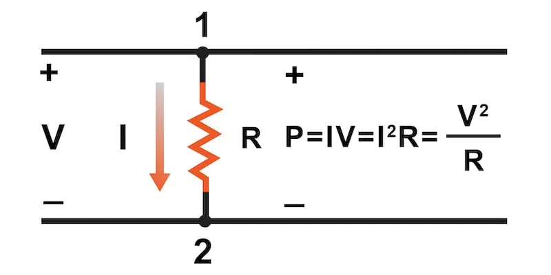
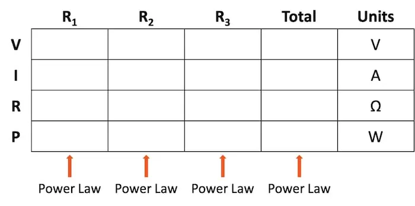
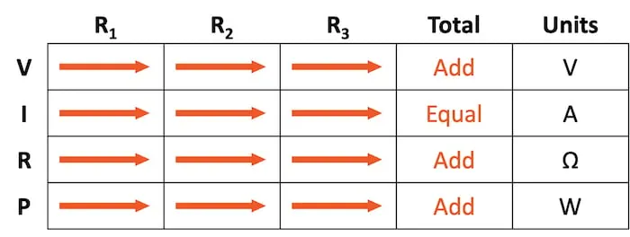
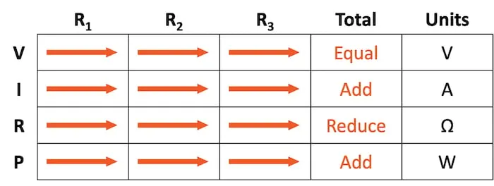

Electrical power measures the rate of work represented in electrical circuits by the symbol “P” and the units of Watts (W). The total circuit power is additive for series, parallel, or any combination of series and parallel components.
When calculating the power dissipation of resistive components, we can use any one of the three Ohm’s law power equations if given any two of the voltage (V), current (I), and resistance (R):
$$P = IV = I^2R = \frac{V^2}{R}$$
These electric power calculations can be easily managed using the table method by adding another row below the voltages, currents, and resistances, as shown in Table 1.
Table 1. Table method with power included.
Power for any particular table column can be found using the appropriate Ohm’s power law equation.
Power is a measure of the rate of work. Per the physics law of conservation of energy, the power dissipated in the circuit must equal the total power applied by the source(s). Therefore, an interesting rule for total circuit power versus individual component power is that it is additive for any circuit configuration: series (Table 2), parallel (Table 3), or any combination of series and parallel.


If you need a refresher or skipped the pages on series circuits and parallel circuits, you can find them here: